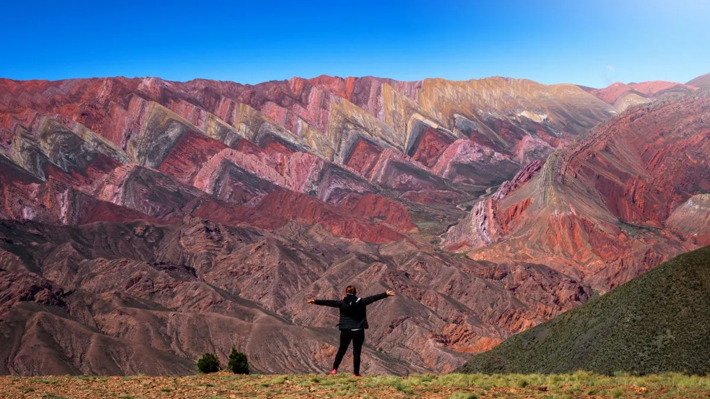

San Salvador de Jujuy 
La cultura de Jujuy, Argentina, está marcada por una fuerte herencia andina e indígena, con una profunda influencia de los pueblos originarios como los Kollas, Omaguacas y Atacamas. La Pachamama es central en sus creencias, celebrándose con rituales cada 1 de agosto. La música y danza folclórica, como el carnavalito y la zamba, son vitales para sus festividades, con instrumentos tradicionales como el charango y la quena. Además, la artesanía es esencial, destacándose en la Quebrada de Humahuaca con tejidos de lana de llama y oveja, cerámica y orfebrería, cuyos diseños reflejan la naturaleza y la cosmovisión indígena.>
Herencia Andina e Indígena
La cultura de Jujuy, Argentina, está marcada por una fuerte herencia andina e indígena, con una profunda influencia de los pueblos originarios como los Kollas, Omaguacas y Atacamas. La Pachamama es central en sus creencias, celebrándose con rituales cada 1 de agosto. La música y danza folclórica, como el carnavalito y la zamba, son vitales para sus festividades, con instrumentos tradicionales como el charango y la quena. Además, la artesanía es esencial, destacándose en la Quebrada de Humahuaca con tejidos de lana de llama y oveja, cerámica y orfebrería, cuyos diseños reflejan la naturaleza y la cosmovisión indígena.
Música y Danza Folclórica
La música típica incluye ritmos andinos como el carnavalito, la chacarera y la zamba. Los instrumentos más tradicionales son el charango, la quena y el bombo. Las celebraciones populares, como el Carnaval de Humahuaca, combinan música, baile, trajes coloridos y rituales ancestrales.
Arte Textil y Artesanías
La producción artesanal es muy importante, especialmente en la Quebrada de Humahuaca. Se destacan los tejidos de lana de llama y oveja, así como la cerámica y la orfebrería. Los diseños suelen incluir motivos indígenas y colores vibrantes que reflejan la naturaleza local.